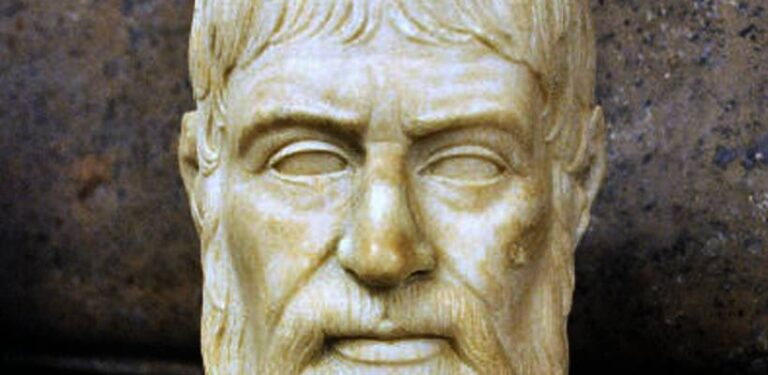

Welcome to the Mathematical World!
Pausanias
Greek Geographer and Travel Writer
Pausanias (fl. c. 110–180 CE) was a Greek traveler and geographer best known for his ten-volume work Description of Greece (Periegesis Hellados). Unlike purely mathematical geographers, Pausanias combined topography with cultural history, mythology, and ethnography. His detailed accounts provide an invaluable record of Greek sanctuaries, cities, and landscapes in the Roman era.
While Pausanias did not employ the mathematical methods of Ptolemy or Marinus, his work reflects a complementary dimension of geography: the systematic documentation of place through observation. He described routes, distances, and landmarks, often noting how long it took to travel between locations. These empirical observations provided practical data that supplemented the abstract, mathematical models of his contemporaries.
Pausanias’ descriptions are particularly significant for archaeology and cultural history. He carefully recorded temples, sculptures, and festivals, often embedding them within historical or mythical narratives. For example, his accounts of Olympia, Delphi, and Athens provide crucial evidence for reconstructing the layout of ancient sanctuaries and artworks that have since been lost.
Though not mathematical in the strict sense, Pausanias occasionally referred to proportions, measurements, and scales. His observations of engineering works, such as bridges and aqueducts, reveal an awareness of practical geometry. More importantly, his insistence on firsthand description—he often criticized reliance on hearsay—demonstrates an empirical methodology aligned with the scientific ethos of antiquity.
The significance of Pausanias lies in his synthesis of geography, history, and ethnography. His Description of Greece was rediscovered in the Renaissance and became a cornerstone for classical archaeology. It bridged the gap between mathematical geography and cultural history, showing that geography encompasses both quantitative mapping and qualitative description. Thus, Pausanias enriched the broader ancient tradition of scientific inquiry into space and place.